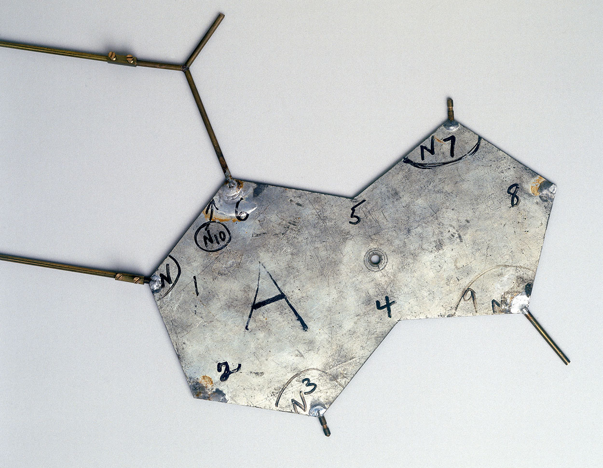

DNA的结构
本期导读
双螺旋结构 · 碱基互补配对 · 碱基计算

视频原话 · 导读3 句
- 同学们好！这节课梳理人教版必修二第三章第二节——DNA 的结构。6.9s
- 高考常考模型构建的科学史、双螺旋结构的特点和碱基的相关计算。6.7s
- 我们按七个考点梳理，每个考点都讲清楚怎么考、怎么做。5.6s
DNA模型的构建01#
- 1威尔金斯、富兰克林DNA 的 X 射线衍射图谱 → DNA 呈螺旋结构
- 2沃森、克里克多种双螺旋、三螺旋模型 → 被否定
- 3查哥夫A 的量 ＝ T 的量，G 的量 ＝ C 的量
- 4沃森、克里克 1953碱基在内侧，A—T、G—C 配对 → 双螺旋结构模型
易错
模型由沃森和克里克构建，富兰克林提供衍射图谱；构建的是物理模型
视频原话5 句
- 考点一，DNA 双螺旋结构模型的构建。威尔金斯和富兰克林获得了高质量的 DNA X 射线衍射图谱，沃森和克里克据此推算出 DNA 呈螺旋结构。14.9s
- 沃森和克里克尝试搭建了很多种不同的双螺旋和三螺旋结构模型，但都被否定了。7.7s
- 查哥夫发现：在 DNA 中，A 的量总是等于 T，G 的量总是等于 C。6.6s
- 1953 年，沃森和克里克让碱基在内侧、A 与 T 配对、G 与 C 配对，构建出了 DNA 双螺旋结构模型。10.6s
- 易错：模型是沃森和克里克构建的，富兰克林提供的是衍射图谱；他们构建的是物理模型。9.1s
脱氧核苷酸与连接02#
- 1组成磷酸 ＋ 脱氧核糖 ＋ 含氮碱基
- 2连接位置碱基连 1′ 碳，磷酸连 5′ 碳
- 3成链前一个的脱氧核糖连后一个的磷酸
- 4方向游离磷酸一端为 5′ 端，另一端为 3′ 端
易错
链中大多数脱氧核糖连两个磷酸，但 3′ 端的脱氧核糖只连一个磷酸
视频原话5 句
- 考点二，DNA 的基本单位——脱氧核苷酸，由一分子磷酸、一分子脱氧核糖和一分子含氮碱基组成。9.5s
- 碱基有 4 种：A、T、G、C，所以脱氧核苷酸也有 4 种。碱基连在脱氧核糖的 1′ 碳上，磷酸连在 5′ 碳上。11.7s
- 相邻的脱氧核苷酸之间，前一个的脱氧核糖和后一个的磷酸相连，形成长链。7.4s
- 每条链有游离磷酸基团的一端叫 5′ 端，另一端叫 3′ 端。5.8s
- 易错：链中大多数脱氧核糖连着两个磷酸，但 3′ 端的那个脱氧核糖只连一个。8.0s
双螺旋结构的特点03#
- 1①两条链反向平行，盘旋成双螺旋
- 2②脱氧核糖和磷酸交替连接，排在外侧，构成基本骨架
- 3③碱基排在内侧，通过氢键形成碱基对
易错
基本骨架在外侧、不含碱基；同一条链上相邻碱基通过“脱氧核糖—磷酸—脱氧核糖”相连，不是氢键
视频原话4 句
- 考点三，DNA 双螺旋结构的主要特点。第一，DNA 由两条链组成，两条链按反向平行方式盘旋成双螺旋。11.4s
- 第二，脱氧核糖和磷酸交替连接，排列在外侧，构成基本骨架。6.5s
- 第三，碱基排列在内侧，两条链上的碱基通过氢键连接成碱基对。6.8s
- 考法：看图识结构。易错：基本骨架在外侧，由脱氧核糖和磷酸构成，不含碱基；同一条链上相邻碱基之间不是氢键，而是“脱氧核糖—磷酸—脱氧核糖”。15.2s
碱基互补配对04#
A—T 之间 2 个氢键，G—C 之间 3 个氢键
总是嘌呤（A、G）配嘧啶（T、C），碱基对宽度相同 → DNA 直径恒定
考法
G—C 含量越高，氢键越多，DNA 结构越稳定，越耐高温
视频原话4 句
- 考点四，碱基互补配对原则：A 与 T 配对，G 与 C 配对。6.0s
- A 和 T 之间有两个氢键，G 和 C 之间有三个氢键。5.3s
- 配对的总是一个嘌呤和一个嘧啶，所以每个碱基对的宽度一样，DNA 的直径保持恒定。8.3s
- 考法：G 与 C 含量越高，氢键越多，DNA 结构越稳定，越耐高温。7.1s
碱基计算（一）05#
双链：A ＝ T，G ＝ C → 嘌呤 ＝ 嘧啶 ＝ 50%
整个 DNA：(A＋G)/(T＋C) ＝ 1
1 链 ＝ a → 2 链 ＝ 1/a（互为倒数）
解题方法
画出两条链，标 1 链、2 链，利用 A1 ＝ T2、G1 ＝ C2 逐项代换
视频原话4 句
- 考点五，碱基计算（一）。双链 DNA 中 A = T，G = C，所以嘌呤数 = 嘧啶数，各占 50%。10.9s
- 整个 DNA 中，(A+G)/(T+C) = 1。4.7s
- 如果一条链中 (A+G)/(T+C) = a，那么互补链中这个比值是 1/a，两条链互为倒数。9.2s
- 解题方法：画出两条链，标上 1 链、2 链，利用 A1 = T2、G1 = C2 逐项代换。10.9s
碱基计算（二）06#
(A＋T)/(G＋C)：1 链 ＝ 2 链 ＝ 整个 DNA
- 1同理A＋T 占整个 DNA 的比例 ＝ 占每条单链的比例（40% → 每条链 40%）
- 2例1 链中 A 占 20%，2 链中 A 占 30% → 整个 DNA 中 A ＝ (20%＋30%) ÷ 2 ＝ 25%
易错
分清占单链还是占双链；单链中的比例换算成双链，要除以 2
视频原话4 句
- 考点六，碱基计算（二）。(A+T)/(G+C) 在一条链、互补链和整个 DNA 中都相等。9.0s
- 同理，A+T 占整个 DNA 碱基的比例，等于它占每一条单链的比例。例：DNA 中 A+T 占 40%，每条链中 A+T 也占 40%。14.0s
- 例：1 链中 A 占该链的 20%，2 链中 A 占该链的 30%，整个 DNA 中 A 占 (20% + 30%) ÷ 2 = 25%。13.8s
- 易错：分清百分比是占单链还是占双链；占单链的比例换算成双链，要除以 2。8.2s
多样性和特异性07#
多样性
碱基对的排列顺序千变万化
n 个碱基对 → 4n 种排列
特异性
每个 DNA 有特定的碱基排列顺序
稳定性
外侧骨架稳定，碱基对之间有氢键
易错
4n 中的 n 是碱基对数，不是碱基数；遗传信息蕴藏在碱基的排列顺序中
视频原话4 句
- 考点七，DNA 的多样性和特异性。多样性：碱基对的排列顺序千变万化，n 个碱基对有 4n 种排列方式。11.5s
- 特异性：每个 DNA 分子都有特定的碱基排列顺序。5.2s
- 稳定性：外侧的基本骨架稳定，碱基之间有氢键，双螺旋结构相对稳定。7.4s
- 易错：4n 中的 n 是碱基对数，不是碱基数；遗传信息蕴藏在碱基的排列顺序中。8.9s
易错速查✓
先自己判断，再点按钮查看对错与解析。
- 1DNA 双螺旋结构模型是富兰克林构建的说法错误：由沃森和克里克构建，富兰克林提供衍射图谱
- 2DNA 的基本骨架由脱氧核糖和磷酸交替连接构成说法正确。
- 3DNA 中每个脱氧核糖都连着两个磷酸说法错误：每条链 3′ 端的脱氧核糖只连一个磷酸
- 4G—C 碱基对的比例越高，DNA 结构越稳定说法正确。
- 5一条链中 (A+G)/(T+C) = 0.5，互补链中也是 0.5说法错误：互补链中为 2，互为倒数
- 6一条链中 (A+T)/(G+C) = 0.5，整个 DNA 中也是 0.5说法正确。
A 配 T、G 配 C，计算先画两条链！
视频原话 · 易错速查5 句
- 最后，用六道判断题检验一下。3.6s
- 判断一？错，模型是沃森和克里克构建的。判断二？对。7.2s
- 判断三？错，3′ 端的脱氧核糖只连一个磷酸。判断四？对。7.8s
- 判断五？错，互补链中是 2，互为倒数。判断六？对。7.2s
- 七个考点串成一条线：A 配 T、G 配 C，计算先画两条链。我们下期再见！8.0s
图片来源
图片来源：Wikimedia Commons —— Science Museum London / Science and Society Picture Library《Template from Crick and Watson’s DNA molecular model, 1953》CC BY-SA 2.0
Science Museum London / SSPL, CC BY-SA 2.0